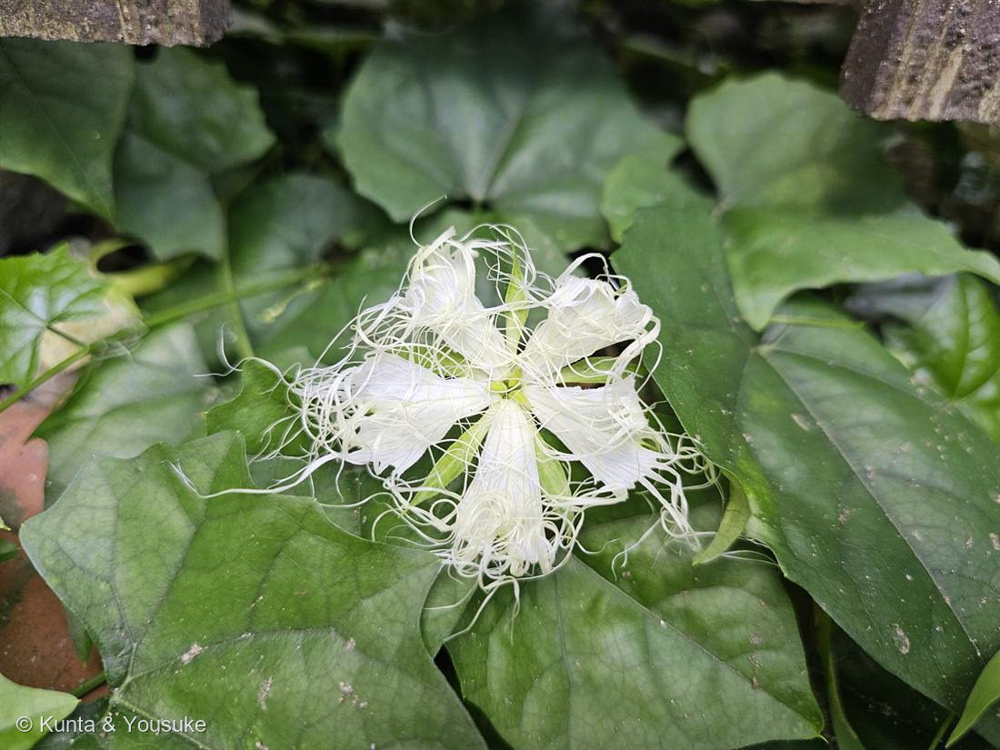

地図を読み込んでいるよ…
🔍 写真も地図も、押しているあいだ拡大して見られるよ（スマホは指を置いてすこし待ってね）。
🌍 の地図＝この子がもともと自生している場所を緑に。日本・東アジア（在来のつる草）。
⚠ 地図は国（日本と中国だけ県・省）までしか塗れないから、ほんとうの分布より広く見えていることがあるよ。地図はだいたいの場所。正確なところは、上の文を見てね。
キカラスウリ（黄烏瓜）
Trichosanthes kirilowii Maxim. var. japonica (Miq.) Kitam.
別名 · カラスウリの仲間 ／ 根＝栝楼根（カロコン）・天花粉の原料
ウリ科 · Cucurbitaceae（カラスウリ属）── この図鑑で初めての科
燻太さんの言葉「白いレースが特徴的。咲いている時間が短くて、咲きたての綺麗な花を撮れたのは初めてかも」……その「撮れた時刻」が、名前を教えてくれた。
⭐ 燻太さんの「白いレース」＝花びらが糸に裂ける
- 花は5枚の白い花びら。そのふちが、細い糸のように何十本も裂けて広がる＝これが「レース」。夕方〜夜にひらく。
- Trichosanthes＝ギリシャ語で「毛の花」（trichos＝毛＋anthos＝花）＝まさに、あの糸のようなレースそのものが属名。
- ⭐なぜレース？＝夜の暗がりで、月あかりに白く浮かび、遠くの虫にも見つけてもらうため（と考えられる）。純白＋広げたレース＝夜のスポットライト。
⭐⭐ 同定の決め手 ── 「撮った時刻」がキカラスウリの証拠
- ⭐この写真は13:12＝お昼すぎに撮られている。——本家のカラスウリは日没後に咲いて、朝にはしぼむ。だから昼にこんな綺麗な花が開いているのは、翌日の午後まで咲き残る「キカラスウリ」の性質そのもの。（038/039 スイフヨウのときと同じ＝撮影時刻が、そのまま同定の証拠になった。）
- ⭐もう一つの決め手＝葉。キカラスウリの葉は光沢があり、切れ込みの浅いハート形（写真のとおり）。カラスウリの葉は毛が多くてザラザラ・ふわふわ。
- → 「咲きたてを昼に撮れたのは初めて」＝それは、この子が昼まで咲き残る子だから。燻太さんが撮れた理由そのものが、名前を教えてくれた。
- ⚠最後の答え合わせ＝秋の実の色（キカラスウリ＝黄／カラスウリ＝赤）。次に実を見たら確定。
⭐⭐ 雌雄異株 ── オスとメスが別の株
⭐ 夜の蛾を呼ぶ ── だれを呼ぶための花か
昔からの暮らし ・ 薬になる根
- ⭐根（塊根）は生薬栝楼根（カロコン）。水にさらして作る白い粉が「天花粉（てんかふん）」＝昔の“おしろい”・あせも取りのパウダー（ベビーパウダーの元祖）。
- ⭐根からとれるタンパク質トリコサンチンは、「リボソーム（タンパク質を作る工場）を止めるタンパク質（RIP）」として研究されてきた（医薬の研究材料）。⚠薬効・毒性は専門領域。生のまま口にしたり使ったりはしない。
- 本家カラスウリの種は「打ち出の小槌（大黒様）／結び文」の形で、縁起物・お守りにされた（キカラスウリの種は平たくて別の形）。→ おまけをカラスウリにしたのは、この“縁起の種”に会うため。